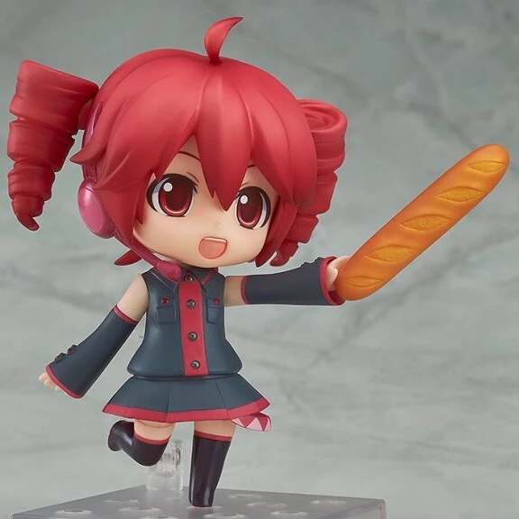
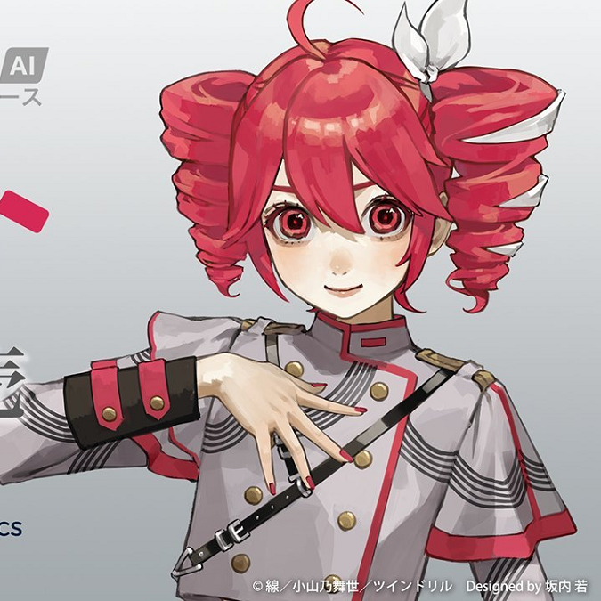

Some fun facts:
Kasane Teto is arguably the most popular UTAU, but she is not the first UTAU.
That title belongs to Defoko!

Despite being a free product, Teto has been turned into many marketable
items such as Nendoroids.

Teto's dream was to become a real Vocaloid. It didn't
happen the way she envisioned, but her dream came true in Synth V!